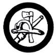

Firemanship
- Explain three common causes of fire in the home (other than careless use of gasoline and kerosene), and tell how to guard against them.
- Do the following:
- Inspect your own house, fill out an inspection blank, and present it to your Counselor.
- Explain how you would plan, in case of fire at night, for everyone in your house (including yourself) to escape to safety.
- List the equipment and materials in your house, if there are any available, for fire protection, and explain under what conditions each is used.
- Tell what fire fighting forces would respond to a fire alarm.
- Tell where flammable liquids such as gasoline, kerosene, alcohol, and turpentine should be stored for absolute safety, and under what conditions they should be used.
- Explain at least two causes of spontaneous combustion, and how to guard against them.
- Do the following:
- Make a fire pail out of an empty gasoline can, or make a fire breaker or a fire rake.
- Show what to do if caught in a room filled with dense smoke or fumes.
- Give three ways of turning on a local fire alarm. Tell the exact location of a fire alarm nearest your house, school, and Troop meeting room.
- Show how to save a person whose clothes are on fire.
- Using proper methods:
- Build a fire in the open where there are flammable materials both around and over the place where fire is to be laid; extinguish the fire.
- Burn leaves and rubbish where it is allowed.
- Do the following:
- Tell how to select, prepare, and maintain a campsite so it is safe from fire.
- Conduct a fire drill in your Patrol/Crew or Troop/Outfit; or help a local fire fighting organization in the community conduct a fire prevention campaign.
|